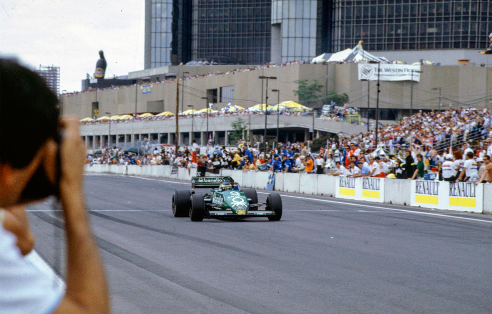
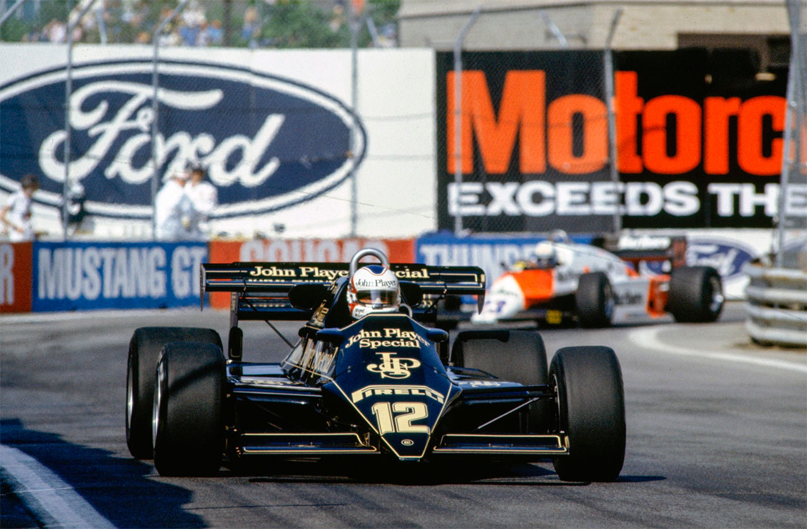
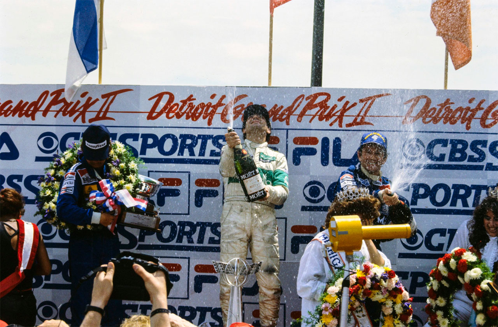

QUE AZAR, PIQUET…

Dez voltas antes do final, a vitória de Nélson Piquet parecia líquida e certa. Mas um dos pneus não resistiu e ele perdeu a chance de ganhar a segunda corrida deste ano. Assim, ficou fácil para Michele Alboreto conquistar os primeiros nove pontos.
“Meu carro estava absolutamente perfeito e dificilmente eu teria algum problema para terminar a prova. Este, pelo menos, era o meu raciocínio até aquele instante”, explicava Nélson Piquet, depois do Grande Prêmio de Detroit, muito mais frustrado do que, como tem sido normal, irritado. Dez voltas antes da bandeirada final, o Brabham de Piquet — até então líder isolado da competição — adernou violentamente em uma curva e, em menos de 10 segundos, o pneu traseiro esquerdo se resumia a um disforme monte de borracha fumacento. A parada nos boxes foi então inevitável e, por mais que a equipe de mecânicos da Brabham tenha desempenhado seu papel com rapidez, Piquet só conseguiu retornar na quarta posição, logo atrás de Michele Alboreto, Keke Rosberg e Jonh Watson. Foi, entretanto, uma brilhante vitória do italiano — a segunda de sua carreira e a segunda nos Estados Unidos. Durante todo o final de semana, utilizando a última versão do motor Cosworth — o DFY —, Alboreto foi sempre o mais rápido entre os pilotos com motores de aspiração normal. O mais importante é que, a não ser Nélson Piquet, todos os demais pilotos com carros turbocomprimidos sofreram problemas mecânicos e tiveram de abandonar. Mais um claro sinal de que os turbos ainda têm muito o que evoluir para que mantenham o mesmo comportamento das pistas de altas médias horárias nos seletivos e exigentes circuitos de rua, com velocidades finais bem inferiores. As esperanças de Patrick Tambay na briga pelo título mundial sofreram um rude golpe quando, ainda no grid de largada, o Ferrari, alinhado na segunda fila, calou o rugido de seu motor definitivamente apesar das mais variadas tentativas por parte do pessoal da equipe. Menos mal que a pole-position pertencia a outro Ferrari, o de René Arnoux.
Duas largadas
Na volta de aquecimento, o Alfa-Romeo de Andrea de Cesaris permaneceu parado, o italiano com o braço erguido. Logo depois, quando os carros retornaram ao alinhamento,1 o diretor de prova decidiu que seria dada uma nova largada — com volta de aquecimento e tudo — e que. para evitar problemas de consumo de combustível, seria eliminada da prova pelo menos uma volta do total. Antes mesmo que a luz verde se acendesse, Elio de Angelis, na segunda fila e pelo traçado externo, largava praticamente sozinho. Mas quem pulava na dianteira era realmente Nélson Piquet, que durante dez voltas manteve a posição de honra, sempre acossado por René Arnoux. Exatamente na décima primeira volta, o francês passava sem muita dificuldade para a dinteira e, em excelente exibição, manteve a liderança mesmo parando, na metade da prova, para troca de pneus e reabastecimento. Mas este domínio não iria durar muito: duas voltas depois do pit-stop, uma pane elétrica eliminaria definitivamente a então maior estrela da prova.

Rosberg, sempre rápido
A primeira metade da prova registrou o excelente desempenho de Keke Rosberg que, logo após a ultrapassagem de Arnoux por Piquet, repetiu a operação para cima do brasileiro. Entretanto, a parada nos boxes acabou fazendo com que tanto Piquet quanto Alboreto recuperassem a diferença que os separava do Williams do campeão mundial, vantagem impossível de ser descontada no final da prova. Para Rosberg, foi um erro de estratégia: “Não deveríamos parar para reabastecimento e troca de pneus nesta pista. Se eu tivesse largado de pneus de composto mais duro e tanques cheios teria vencido a prova. Mas o que interessa é que fui o segundo e ainda estou na briga pelo bi-campeonato”. Mesmo assim, nas últimas voltas da disputa, enquanto Alboretto aliviava definitivamente o acelerador, John Watson pressionava forte a Rosberg, que levou a bandeirada somente 1,5 segundo à frente do irlandês, vencedor deste GP ém 1982.
Mau dia para Renault
As perspectivas da Renault já se desvaneciam quando do abandono de Eddie Cheever, na quinta volta. Na passagem seguinte era a vez do Lotus-Renault de Elio de Angelis quebrar o câmbio depois de andar razoavelmente em segurança na terceira posição. Alain Prost terminou em oitavo com a marca da valentia — a marca de um campeão? Logo na segunda volta ele colidiu com o Arrows do belga Thierry Boutsen, perdeu um spoiler dianteiro e foi com muita dificuldade que perseguiu os lideres da prova a distância. Para os Alfa-Romeo, foi uma boa exibição e um mau resultado. De Cesaris andou metade da prova na quarta posição até quebrar o turbocompressor, enquanto seu companheiro de equipe, Mauro Baldi, terminava em 12? a quatro voltas do vencedor, depois de dar uma forte rodada que chegou a danificar os pneus.
Os problemas com os carros turbo permitiram também que Jacques Laffite, com o segundo carro da equipe Williams, terminasse em quinto, garantindo para Frank Williams a segunda posição no mundial de construtores, quatro pontos atrás da Renault. E, por incrível que pareça, a sexta posição de Nigel Mansell significaria o primeiro resultado positivo e o primeiro ponto para a equipe Lotus no desenrolar desta temporada. A verdade é que, com a ausência de Colin Chapman, os carros pretos e dourado perderam muito de seus carisma. Mas ainda havia muita gente reclamando. Thierry Boutsen, sétimo classificado, admitia que lhe faltara agressividade bastante para arremeter sobre Nigel Mansell. Afinal, a prova estava muito mais para ele. Da mesma maneira, John Watson, vencedor em Long Beach e um quase especialista em circuitos de rua, afirmava que só fora derrotado pelos pneus, que na última e decisiva fase da prova já não demonstravam a mesma aderência. Para o vencedor — considerado pela imprensa como um dos mais educados e simpáticos integrantes do circo — esta foi a primeira prova em que pontuou nesta temporada. E Michele Alboreto demonstrou que realmente tem estrela quando se trata de corridas nos EUA. Afinal, venceu em Las Vegas no final do ano passado e agora vence em Detroit, depois de sofrer nada menos que quatro acidentes em seis participações nesta temporada…
